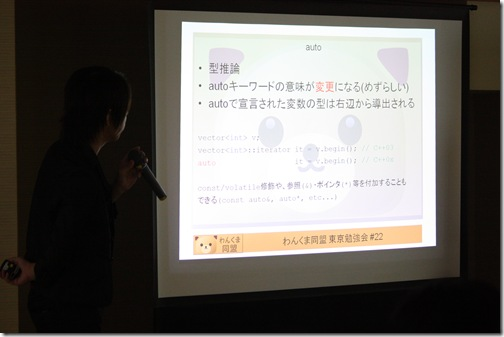
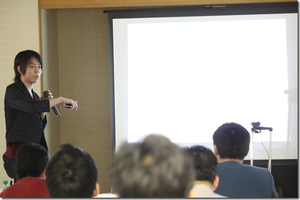
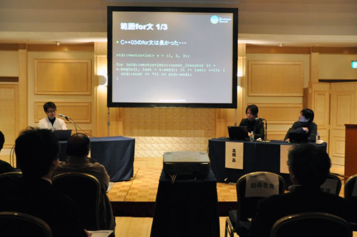
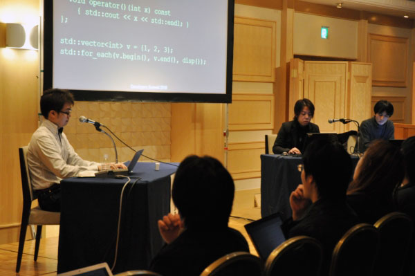
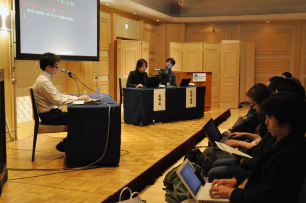
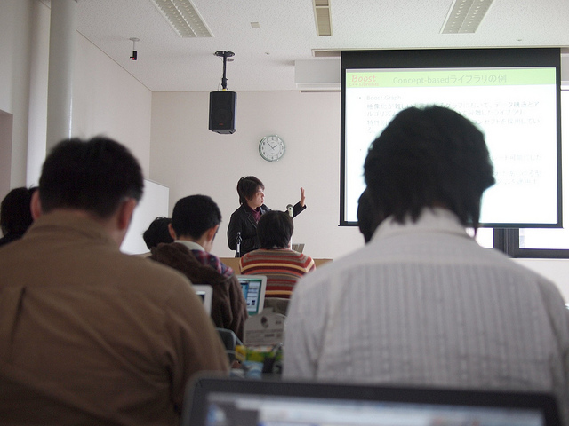
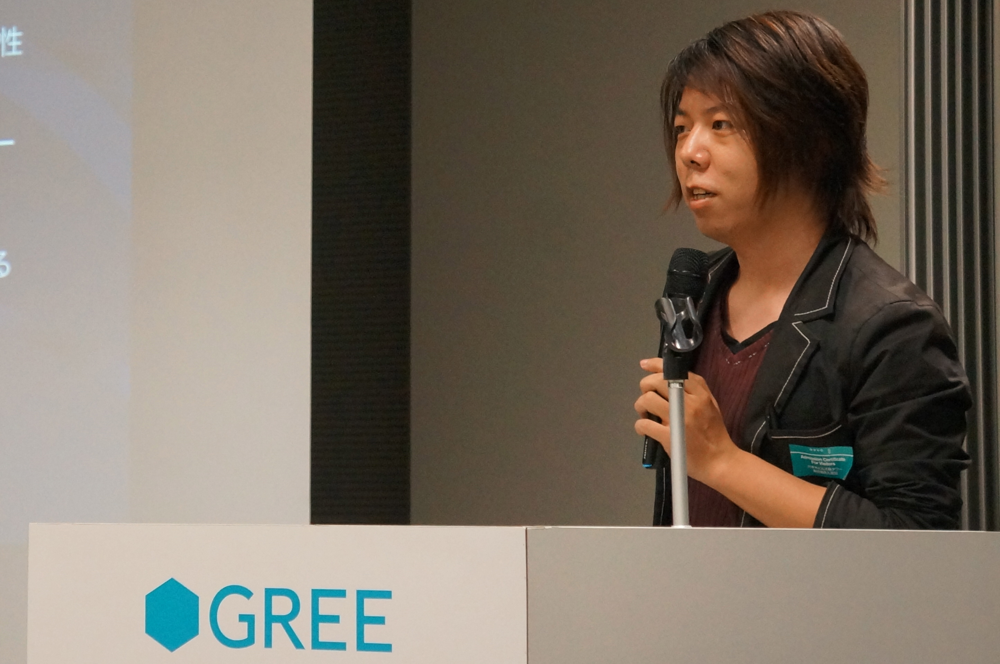

高橋 晶(Akira Takahashi)
1985年3月1日生まれ。
宮城県登米市出身、神奈川県横浜市在住。
C++, C#, Objective-C++, Ruby, PHP。
Scala、Haskellなどもある程度使える。
メタプログラミング、オブジェクト指向プログラミング、関数型プログラミング、ジェネリックプログラミング、マルチパラダイムデザイン、EDSL、ドメイン駆動開発、ゲームプログラミング、ネットワークプログラミング、並列処理、構文解析、画像処理、テスト可能な設計、構文解析、非同期処理、コルーチンなど。
アジャイル、Unified Process。
並列処理の抽象化、GPGPU、Functional Reactive Programming、分散処理、グラフ理論、画像認識、統計。


わんくま同盟 東京勉強会 #22 「C++0x 言語の未来を語る」にて。



Developers Summit 2010 「C++0x、Ruby、ECMAScript5 言語の国際標準化について」にて。

Boost.勉強会 #6 札幌にて。

GREE Tech Talk #05にて。